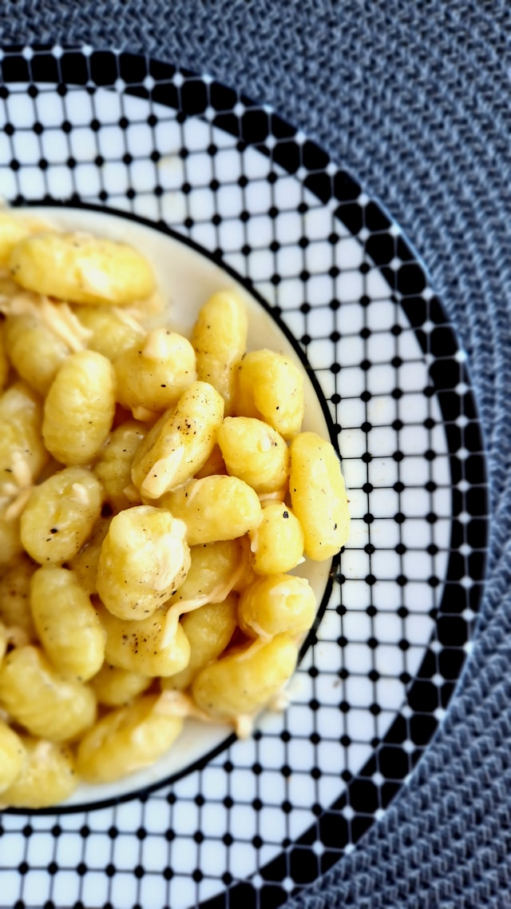

Potato Garlic Butter Gnocchi
Description

A classic Italian dish, potato gnocchi with garlic butter sauce features tender,
pillowy dumplings tossed in a rich, aromatic sauce made with butter, garlic,
and herbs. This recipe combines simplicity with deep flavor, making it ideal for
a comforting weeknight meal or a special occasion.
Ingredients
- Russet potatoes: 1-4 kg (scrubbed and pierced all over
with a fork)
- Egg yolks: 3 (lightly beaten, optional; see note)
- All-purpose flour: about 100g (divided, plus more for dusting and as needed)
- Kosher salt: to taste
- Unsalted butter: 1 stick, around 119g
- Fresh sage leaves: leaves from 1 large sprig (about 15 large and small leaves)
- Parmigiano Reggiano cheese: for grating
Steps
- Preheat the oven to 232°C. place the potatoes on wire rack set over a baking sheet,
on a baking sheet lined with a layer of salt, or directly on the oven racks. Bake
until completely tender when pierced with a fork, about 45 minutes.
- Transfer the cooked potatoes to a clean work surface. Using tongs, slice each potato
in half lengthwise. Scoop the flesh into a ricer or food mill fitted with the finest
disk and press the flesh onto the work surface, spreading it into an even layer to
allow steam to escape for a few minutes.
- Drizzle the beaten egg yolks over the potato flesh, if using. Scoop ½ cup of flour into
a fine-mash sieve and tap to dust it evenly over the potatoes. Using a pastry blender or
a bench scraper, chop down repeatedly to cut the flour and egg into the potato.
- Gather trhe shaggy potato mass into a loose ball with your hands. Press the ball flat
with your hands, then fold it in half using the bench scraper and press down again.
Scoop the remain ¼ cup of flour into the sieve and dust it over the dough. Gently fold
and press the dough until a uniform, non-sticky mass comes together. Avoid smearing as
you would when kneeding bread.
- Dust the dough all over with flour and gently form it into a log. Clean and flour your
work area. Using a bench scraper, slice off a 1-inch-thick portion of the dough and roll
it into a snake about ½ inch thick, using a light touch and dusting with flour as needed
to prevent sticking.
- Cut the snake into 1-inch portions with the bench scraper, trimming off uneven ends.
Transfer the gnocchi to a well-floured area or baking sheet and repeat with the
remaining dough.
- Bring a large port of very well-salted water to a boil. Meanwhile, melt the butter in a
large skillet over medium-high heat until it foams. Add the sage leaves and fry until very
aromatic and the butter begins to lightly brown; remove from heat.
- Using a bench scraper or slotted spoon, transfer the gnocchi to the boiling water. Stire
once to prevent sticking. When the gnocchi begin to float to the surface, wait about 20
seconds, then taste one; it should be soft yet cooked through, without any raw-flour flavor.
- Using the slotted spoon, scoop the cooked gnocchi directly into the skillet with the sage
butter, allowing some of the clinging water to come along. Cook over medium-high heat, tossing
very gently and adding a splash of cooking water if the sauce becomes greasy or breaks, until
the gnocchi are coated in a rich, creamy sauce, about 1 minute.
- Carefully sppon the gnocchi into serving dishes and top immediately with freshly grated Parmigiano
Reggiano cheese. Serve right away.
Pro tips
- Cooked gnocchi can be stored in an airtight container in the fridge for up to 3 days. Reheat
gently in a skillet with a little butter or oil to restore crispness. Uncooked gnocchi can be
frozen on a baking sheet, then transferred to a freezer bag for up to 3 months.
- For the lightest texture, avoid overworking the dough. The potatoes should be warm when mixed
with the flour to help the dough come together.
- Do not overcook the gnocchi in the water, just until they float and are tender.
- The key to a good brown butter sauce is watching the butter closely as it browns; it can go from
golden to burnt quickly.
Home